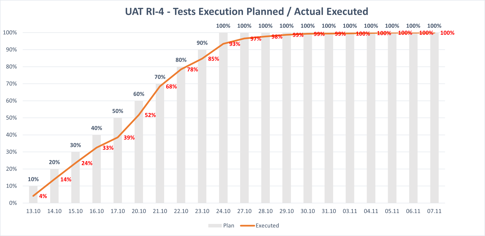
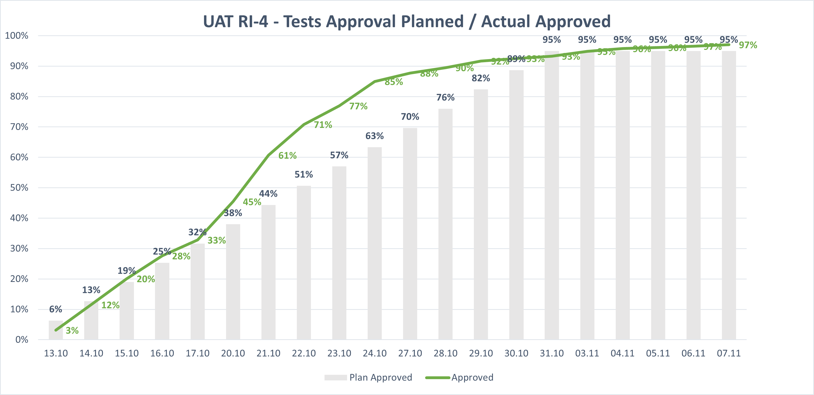

UAT Dashboard
UAT
Last update:
v1.4 (hybrid charts + fixes)
All platforms
All teams
Generate Status (MD)
In Scope
Executed %
Pass %
Open Defects
Blocker / Critical
Execution Over Time
(image)

Source: Excel snapshot
Defect Burndown
(image)

Source: Excel snapshot
Top Open Issues
Key
Priority
Summary
Owner
Team
Platform
Teams & Contacts
Lead:
Email:
Key Dates
No key dates loaded. Check
uat.json
.
Generated Status (Markdown)
Close
Copy
Download .md